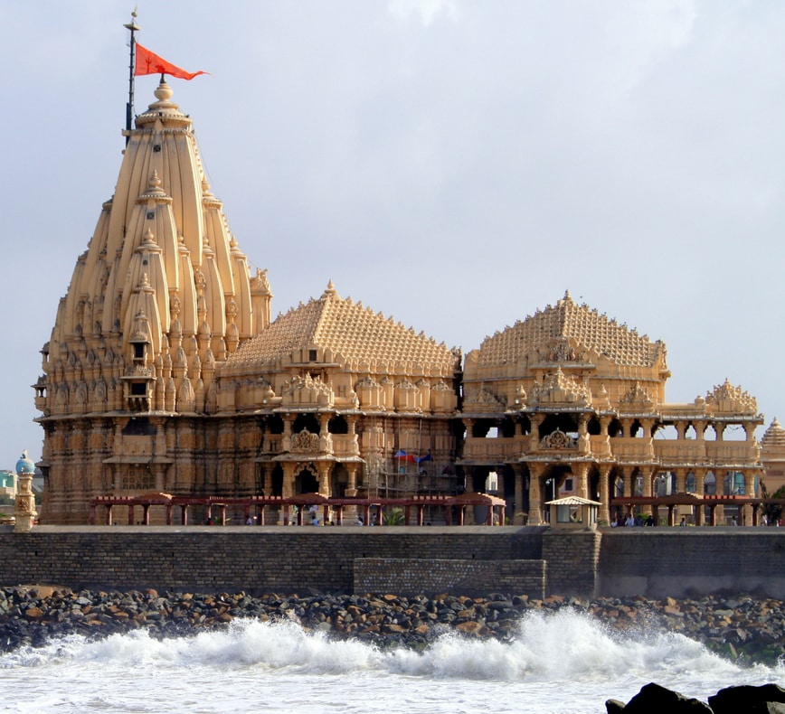
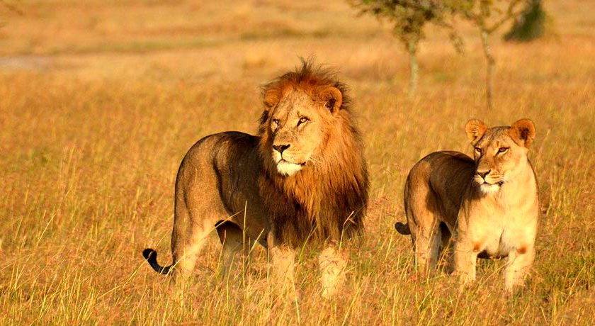
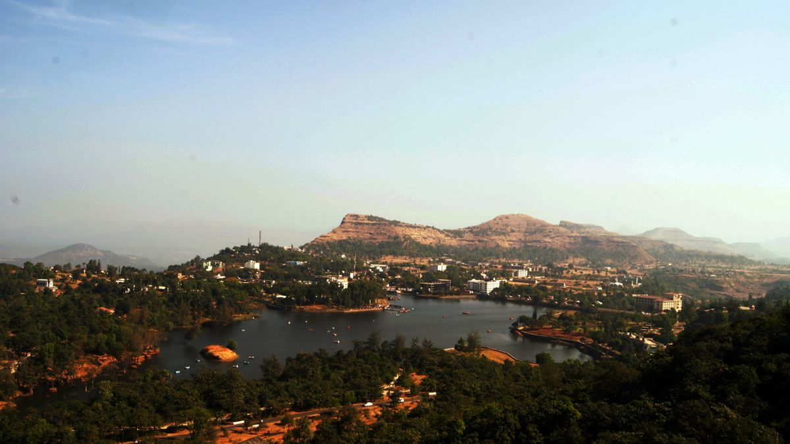
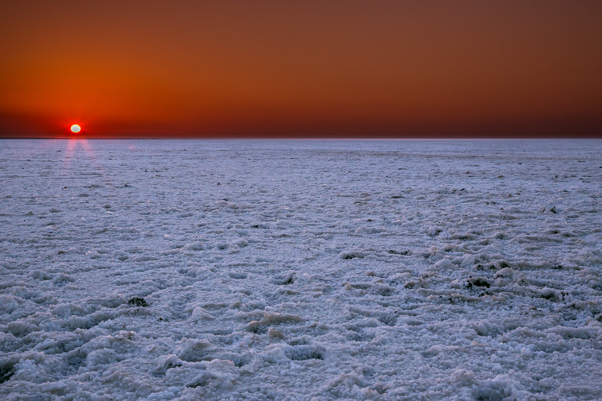

1. Somnath Temple, Veraval
The Somnath temple (also known as the Deo Patan) located in Veraval in Saurashtra on the western coast of Gujarat,
India is believed to be the first among the twelve Jyotirlinga shrines of Shiva.It is an important pilgrimage and
tourist spot of Gujarat. Reconstructed several times in the past after repeated destruction by several Muslim invaders and rulers,
the present mandir was reconstructed in the Chaulukya style of Hindu temple architecture and completed in May 1951.The temple is
considered sacred due to the various legends connected to it. Somnath means "Lord of the Soma", an epithet of Lord Shiva.
According to tradition, the Shivalinga in Somnath is one of the 12 jyotirlingas in India, where Shiva is believed to have appeared
as a fiery column of light. The jyotirlingas are taken as the supreme, undivided reality out of which Shiva partly appears.

2. Gir National Park
At a distance of 42 km from Somnath, 54 km from Junagadh, 96 km from Diu, 145 km from Porbandar, 156 km from Rajkot, 195 km
from Jamnagar, 246 km from Dwarka, 372 km from Ahmedabad, 387 km from Bhuj, 441 km from Vadodara, and 594 km from Surat, Gir
National Park is a wildlife sanctuary situated at Sasan Gir in Gujarat. Also known as Sasan Gir, it is one of the renowned
national parks in India and among the best places to include in Gujarat packages.Established as a sanctuary in 1965, Gir
National Park is the most popular sanctuaries in India during your wildlife tour as it is the royal kingdom of Asiatic lions
and essentially the only place besides Africa on earth where these majestic beasts roam freely. Gir is the part of Kathiawar-Gir
dry deciduous forests eco-region that stretches across Gujarat, Rajasthan, and Madhya Pradesh. The terrain of the Gir National
Park is made up of successive rugged ridges, isolated hills, plateaus and valleys. Gir forms the catchment of seven perennial
rivers and 4 dams - one each on the Hiran, the Shingoda, the Machhundri, and the Raval. The biggest reservoir is the Kamleshwar
Dam on Hiran River, which is called as the lifeline of Gir.

3. Saputara
At a distance of 10 km from Borgaon, 41 km from Ahwa,77 km from Nashik, 129 km from Mandvi, 160 km from Shirdi, 160 km from
Surat, 262 km from Mumbai, 287 km from Vadodara, 288 km from Pune, 398 km from Ahmedabad, 421 km from Gandhinagar, 582 km from
Rajkot, 673 km from Jamnagar, 680 km from Junagadh, 763 km from Porbandar, 776 km from Somnath, and 805 km from Dwarka, Saputara
is a small hill station in Dang district of Gujarat. Positioned on the Maharashtra- Gujarat border, it is one of the most popular
tourist places to visit near Mumbai and among must visit places as part of Gujarat tour packages.Nestled in the Sahyadri range of
Western Ghats at an altitude of about 1000 m, Saputara is the only hill station in Gujarat and among the well planned hill stations
in India. Literally means 'the Abode of Serpents', this quaint hill station of Saputara derives its name from the Snake god revered
by the tribals. Also, legend says that Saputara is the place where Lord Rama spent 11 years of his exile.The lush green forests,
undulating mountains, dazzling waterfalls, dreamy winding roads, stunning landscape and salubrious climate make the picturesque
hill station of Saputara a perfect escape into the lap of Mother Nature. Saputara Lake, Sunrise Point, Sunset Point, Saputara
Tribal Museum, Gira Waterfalls, Nageshwar Mahadev Temple, Artist Village etc. are some of the prominent site seeings.

4. Rann of Kutch
The Rann of Kutch is a large area of salt marshes that span the border between India and Pakistan.
It is located mostly in Gujarat (primarily the Kutch district), India, and in some parts of Sindh, Pakistan. It is divided
into the Great Rann and Little Rann. The nothingness for miles is both nerve wracking and stunning with small oasis of water bodies and
shrub forests doubling up as homes for pink flamingoes and wild asses. Tribal hamlets with cylindrical mud bhungas (huts) are
the epicenter for Kutchi embroidery, tie and dye, leatherwork, pottery, bell metal craft and the famous Rogan painting by the
only surviving expert family. Approximately 200 km east of the Rann, is the Little Rann of Kutch, which houses the 4953-sq-km
Wild Ass Sanctuary. It homes the only remaining population of the chestnut-coloured Indian wild ass (khur), as well as
blue-bulls, blackbuck and chinkara.